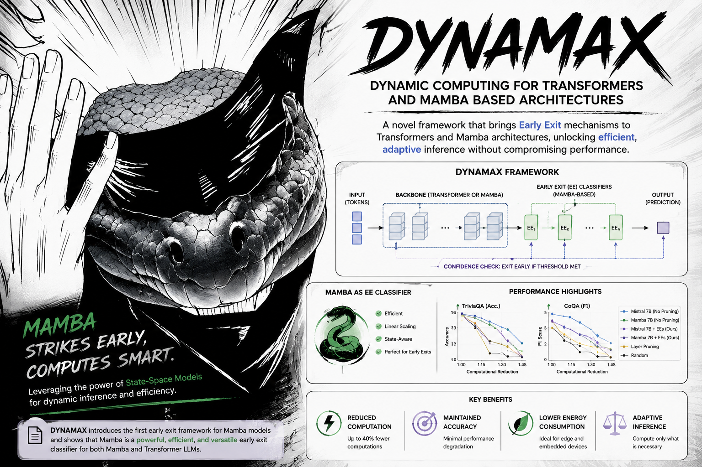

PhD in Artificial Intelligence
Università della Svizzera italiana · IDSIA USI-SUPSI
Research on model generalization for temporal data.
Università della Svizzera italiana · IDSIA USI-SUPSI
PhD Student in Artificial Intelligence
Researching foundation models for time series, with a background in artificial intelligence, telecommunications engineering, and signal processing.
About
I am a PhD Student in the Faculty of Informatics at Università della Svizzera italiana and the Dalle Molle Institute for Artificial Intelligence, IDSIA USI-SUPSI. I am part of the Graph Machine Learning Group, where my research studies mainly the application of foundation models for time series.
My academic background combines telecommunications engineering and artificial intelligence. I completed a double Master's degree in Computer Science, specializing in Artificial Intelligence, at Politecnico di Milano, and in Telecommunications Engineering at Universidad de Sevilla.
Research
Foundation models for temporal data, with emphasis on forecasting, representation learning, adaptation, and reliable behavior across changing domains.
Deep learning for skin-lesion imaging, including feature learning, clinical signal extraction, melanoma analysis, and robust dermatology support systems.

Dynamic computation for large models, studying how Transformer- and Mamba-style architectures can reduce inference cost without losing reliability.
Data-driven RF linearization with behavioral modeling, sparse regression, numerical conditioning, and signal processing.
Education
Università della Svizzera italiana · IDSIA USI-SUPSI
Research on model generalization for temporal data.
Politecnico di Milano
Specialization in Artificial Intelligence, with work across machine learning, complex problem solving, and advanced computational methods.
Universidad de Sevilla
Training in telecommunications systems, signal processing, engineering methods, and applied computational techniques.
Running Projects
Mobile-first conjugation practice with user progress, streaks, and offline fallback. The static frontend can run from this site while progress syncs through a Raspberry Pi API.
This section is ready for future tools: a card, a route, and a deployment target for each app.
Keep the personal website static and deploy each app under its own path, starting with /italian/. Run app backends on the Raspberry Pi behind Cloudflare Tunnel, then point each frontend to its own API URL at build time.
Projects / Technical Work
Researching machine learning methods for graph-structured data evolving over time, with emphasis on generalization, robustness, and structured prediction.
Combining artificial intelligence with telecommunications engineering, including signal processing, sparse regression, and data-driven modeling for communication systems.
Developing machine learning systems for structured scientific data, with interest in models that remain reliable under distribution shift and changing environments.
Personal
Contact